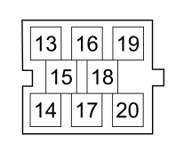

P020E RADIO (CHANGE CD)
- Path
- Electrical equipment > 3 CONNECTORS > P VARIOUS CONSUMERS > P020 RADIO > P020E RADIO (CHANGE CD)
- Kind
- connector pinout (pin -> wire colour -> other end)
- Applies to
- all engines; all production periods
- Interactive page
- https://sloeber94.github.io/elrnDB-fCrm/en/#/194005453
Applies to: all engines; all production periods

Wiring | Colour |
|---|---|
_ |
Pin | Cable | Destination | |||
|---|---|---|---|---|---|
Sec.. | Colour | Node | Connect. | Pin | |
13 | 0,5 | G (yellow) | 13 | ||
14 | 0,5 | L (blue) | 14 | ||
15 | 1 | R (red) | 15 | ||
16 | 0,5 | V (green) | 16 | ||
17 | 1 | N (black) | 17 | ||
18 | 0,5 | SCH (shielded cable) | 18 | ||
19 | 0,5 | B (white) | 19 | ||
20 | 0,5 | LN (blue with black stripe) | 20 | ||